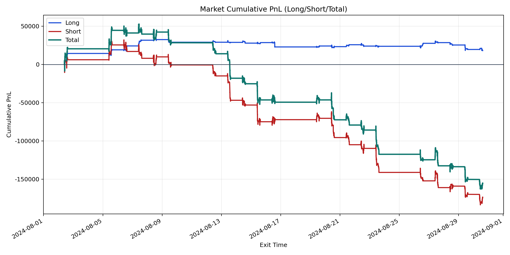
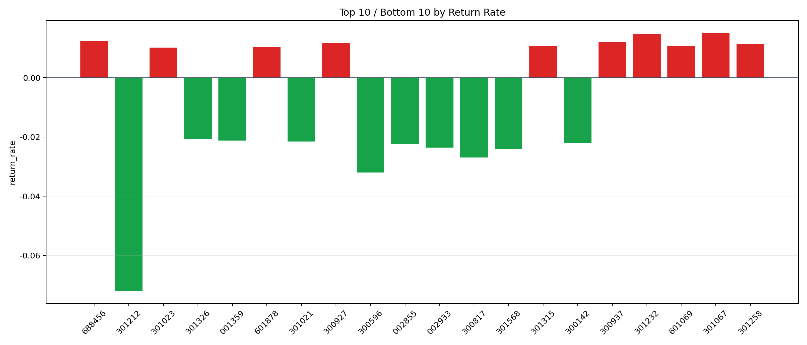

| repo_root | /home/haoranyou/data/output/alpha0.4_1w_5s_3ticks |
|---|---|
| period_months | 1 |
| period_label | 2024-08-02_to_2024-08-30 |
| start_time | 2024-08-02 09:50:22 |
| end_time | 2024-08-30 15:00:00 |
| n_trades | 43115 |
| n_symbols | 2092 |
| total_pnl | -155577.97254999986 |
| long_total_pnl | 18143.69719999993 |
| short_total_pnl | -173721.6697499998 |
| total_entry_notional | 405907952.0 |
| long_entry_notional | 58497579.0 |
| short_entry_notional | 347410373.0 |
| total_return_rate | -0.00038328387454207813 |
| long_return_rate | 0.00031016150600010183 |
| short_return_rate | -0.0005000474460502071 |
| top_symbols_by_return | ["301067", "301232", "688456", "300937", "300927", "301258", "301315", "601069", "601878", "301023"] |
| bottom_symbols_by_return | ["301212", "300596", "300817", "301568", "002933", "002855", "300142", "301021", "001359", "301326"] |

